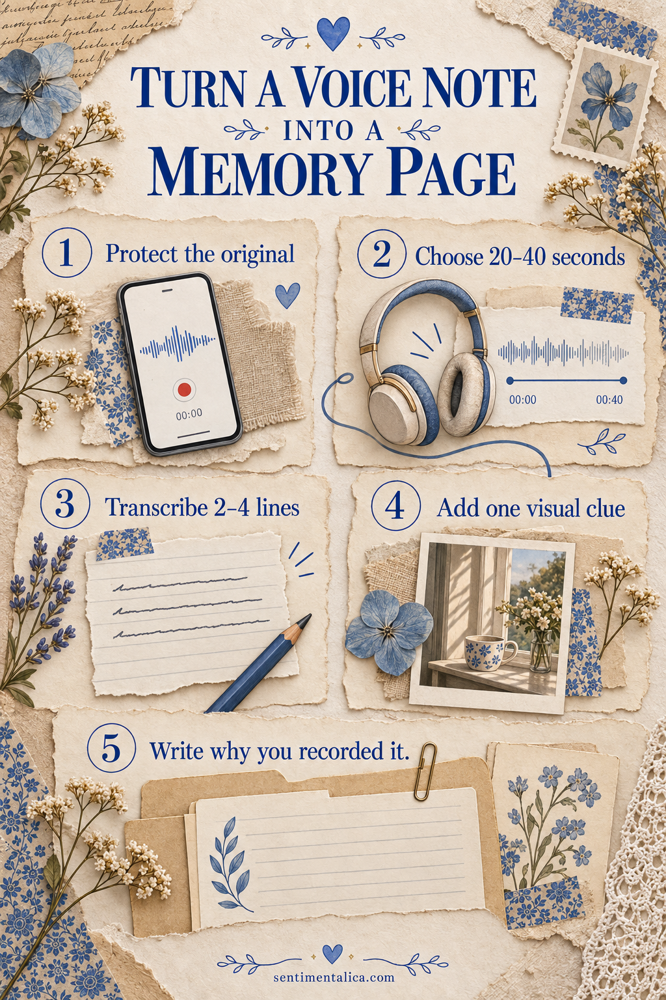
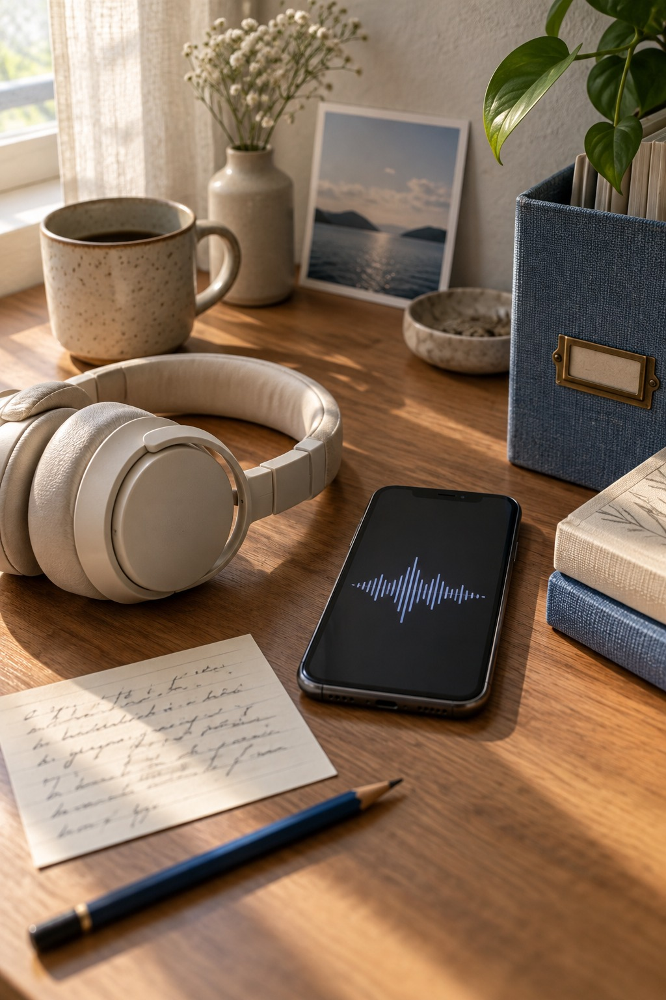

Turn a voice note into a memory page when the sound of the moment matters as much as the photograph. A short transcript fragment, one visual clue, and one sentence about why you recorded it are enough.

Protect the original recording first
Rename the file with the date and a few identifying words, then keep a backup in your normal storage system. Do not edit the only copy. If another person can be heard, consider whether the recording or its contents should remain private.
Listen once without writing. On the second listen, mark the twenty to forty seconds that carry the clearest feeling or detail.
Transcribe only the useful fragment
Write two to four lines exactly when possible. Keep pauses, repeated words, or imperfect grammar if they reveal the speaker’s voice. Use brackets when a word is uncertain rather than silently inventing a smoother sentence.
Add a short label explaining who is speaking and where the recording happened. The fragment should be understandable without replaying the audio.
Choose one visual clue
Use a photograph, receipt, map fragment, color swatch, or simple object connected to the recording. It does not need to illustrate every word. A picture of the room or weather can create enough context while letting the transcript remain central.
If you need a neutral practice image, choose one free floral picture and pair it with a harmless voice note about your day. Test the layout before working with a more private memory.

Build the page around sound
Place the transcript where the eye arrives first. Add the visual clue beside it, then use one narrow line or strip to connect the two. Avoid decorative quotation marks unless the text is truly verbatim.
You can add a small waveform drawn by hand, but do not let it become the subject. The page is about the remembered voice, not the technology used to capture it.
Write why you pressed record
Finish with one sentence in your present voice: what made you notice the moment, what changed after it, or what you hope not to forget. This separates the recorded fragment from your later reflection and gives the page emotional context.
Keep the audio connected safely
Write the exact file name on the page back or on a removable card. A QR code can be useful only if it points to storage you control and does not expose private material publicly. File names and dates are slower but often safer and more durable.
Keep a plain-text transcript beside the audio backup. File formats and apps change, while readable text is easy to copy forward. Include the recording date and speaker label in both places so the page, transcript, and sound can be matched later.
Close the page and confirm that every visible detail is appropriate for its future readers. Preserve the feeling generously and the private information carefully.